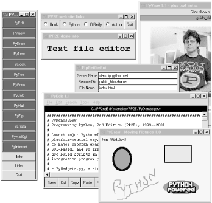
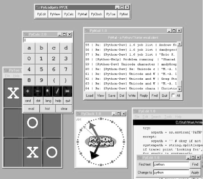
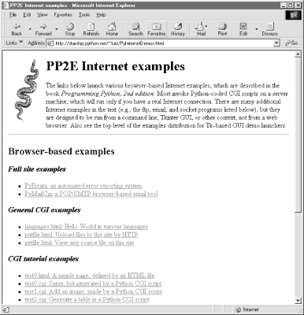

| I l@ve RuBoard |
|
Using the Examples and DemosI want to briefly describe how to use the book's examples here. In general, though, please see the following text files in the examples distribution directory for more details:
Of these, the README-PP2E.txt file is the most informative, and the PP2E\Config directory contains all configuration file examples. I give an overview here, but the files listed give a complete description. The Short StoryIf you want to see some Python examples right away, do this:
The Launch_* scripts start Python programs portably[4] and require only that Python be installed -- you don't need to set environment variables first or tweak the included PP2E\Config setup files to run them. LaunchBrowser will work if it can find a web browser on your machine, even if you don't have an Internet link (though some Internet examples won't work completely without a live link).
If installing Python isn't an option, you can still run a few Python web demos by visiting http://starship.python.net/~lutz/PyInternetDemos.html with your browser. Because these examples execute scripts on a server, they tend to work best when run live from this site, rather than from the book's CD. The DetailsTo help organize the new examples, I've provided a demo launcher program, PyDemos.pyw, in the top-level PP2E directory of the examples distribution. Figure P-1 shows PyDemos in action on Windows after pressing a few buttons. The launcher bar appears on the left of the screen; with it, you can run most of the major graphical examples in the book with a mouse click. The demo launcher bar can also be used to start major Internet book examples if a browser can be located on your machine (see the following launcher description). Besides launching demos, the PyDemos source code provides pointers to major examples in the distribution; see its source code for details. You'll also find Linux automated build scripts for the Python/C integration examples in the top-level examples directory, which serve as indexes to major C examples. Figure P-1. The PyDemos launcher with pop-ups and demos (Guido's photo reprinted with permission from Dr. Dobb's Journal)I've also included a top-level program called PyGadgets.py, and its relative PyGadgets_bar.pyw, to launch some of the more useful GUI book examples for real use instead of demonstration (mostly, the programs I use often; configure as desired). Figure P-2 shows what PyGadgets_bar looks like on Windows, along with a few of the utilities that its buttons can launch. All of the programs are presented in this book and included in the examples distribution. Most gadgets require a Python with Tkinter support, but that is the default configuration for the standard Windows port on the book's CD (see http://examples.oreilly.com/python2). Figure P-2. The PyGadgets utilities launcher bar, with gadgetsTo run the files listed in the prior paragraph directly, you'll need to set up your Python module search path (see the top-level PP2E/Config/setup* files for hints). But if you want to run a collection of Python demos from the book and don't want to bother with setting up your environment first, simply run the self-launching utility scripts in the PP2E directory instead: Launch_PyDemos.pyw, Launch_PyGadgets.py, and Launch_PyGadgets_bar.pyw. These Python-coded launcher scripts assume Python has already been installed, but will automatically find your Python executable and the book examples distribution, and set up your Python module and system search paths as needed to run the demos. You can probably run these launch scripts by simply clicking on their names in a file explorer, and you should also be able to run them directly from the book's CD-ROM (see http://examples.oreilly.com/python2). See the comments at the top of Launcher.py for more details (or read about these scripts in Chapter 4 ). Many of the browser-based Internet examples from the book can also be found online at http://starship.python.net/~lutz/PyInternetDemos.html, where you can test-drive a few Python Internet scripting examples. Because these examples run in your web browser, they can be tested even if you haven't installed Python (or Python's Tk support) on your machine. The PyDemos program also attempts to launch a web browser on the major example web pages by starting the LaunchBrowser.py script in the examples root directory. That script tries to find a usable browser on your machine, with generally good results; see the script for more details if it fails. Provided LaunchBrowser can find a browser on your machine, some demo buttons will pop up web pages automatically, whether you have a live Internet connection or not (if not, you'll see local files in your browser). Figure P-3 shows what the PyInternetDemos page looks like under Internet Explorer on Windows. Figure P-3. The PyInternetDemos web pageOf special interest, the getfile.html link on this page allows you to view the source code of any other file on the book's site -- HTML code, Python CGI scripts, and so on; see Chapter 12 for details. To summarize, here is what you'll find in the top-level PP2E directory of the book's examples distribution:
There are also subdirectories for examples from each major topic area of the book. In addition, the top-level PP2E\PyTools directory contains Python-coded command-line utilities for converting line-feeds in all example text files to DOS or Unix format (useful if they look odd in your text editor), making all example files writable (useful if you drag-and-drop off the book's CD (see http://examples.oreilly.com/python2), deleting old .pyc bytecode files in the tree, and more. Again, see the distribution's README-PP2E.txt file for more details on all example issues. Where It's AtThe book examples distribution can be found on the CD-ROM that accompanies this book. See the CD's top-level README file for usage details, or browse the CD's example root directory in your favorite file explorer for a quick tour. In addition to the book examples, the CD also contains various Python-related packages, including a full Windows self-installer program with Python and Tk support (double-click and say "yes" at all prompts to install), the full Python source code distribution (unpack and compile on your machine), and Python's standard documentation set in HTML form (click to view in your web browser). Extra open source packages such as the latest releases (at the time of publication) of the SWIG code generator and JPython are also included, but you can always find up-to-date releases of Python and other packages at Python's web site, http://www.python.org. |
| I l@ve RuBoard |
|